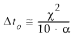
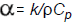

Transient Heat Options dialog box
Use the Transient Heat Options dialog box when creating or modifying a transient heat transfer study to define the time intervals at which you want to see the temperature response of the model. The purpose is to identify stress results at one or more specific, critical operation times, before the model reaches a steady state.
You can save your transient heat study definition parameters as global defaults using the Transient Heat Options.… button on the Solid Edge Options dialog box→Simulation tab.

- End Time
-
Specifies the total study processing time span, in seconds. The length of the study is entirely dependent on what operation or process you want to simulate. You can convert a value from minutes to seconds by typing min after the value, and then pressing Tab. The maximum value is 100,000,000.00 seconds.
- Calculation Time Increment
-
Specifies how often you want the system to calculate thermal results. You should use a value that is sufficiently small, so that the results are linear over the time step interval. This value must be greater than zero and less than the end time. You can use the default value initially, and then adjust it based on the results.
For guidance from NX Nastran, see the formula for Estimating the time step size (Calculation Time Increment) in this help topic.
- Output Time Increment
-
At what time increment in the process you want to begin generating plots. Adjust this value to directly affect the number of result sets produced. This value must be greater than or equal to the calculation time increment, and less than the end time.
- Number of Results
-
This read-only field shows how many result sets will be produced based on your current input values, plus one more plot as the baseline. This number is affected by the interval type (constant or adaptive) that you use to process the study. Refer to the examples below.
Note:The number of results produced by the simulation must always be an integer. This means that sometimes when you make a small change to one value (for example, to the output time increment), other values that you entered previously (for example, the end time) adjust automatically.
- Interval Type
-
Specifies whether the solver is allowed to adjust the number of result sets generated.
- Constant
-
Choose the Constant option if it is important to obtain an exact number of result sets.
Example:-
If End Time=100 sec
Output Time Increment=25
Interval Type=Constant,
then result sets are produced at these intervals:
Number of Result Sets =100/25+1=5

-
- Adaptive
-
Allows the solver to adjust the step intervals to provide more accurate calculations of transient heat. This means that there may be more or fewer result sets produced than is currently indicated in the dialog box. During high change, the step interval is low, and during steady change, the interval is larger. An advantage of using the adaptive time step algorithm is the potential for significantly reduced run times.
Example:-
If End Time=5000 sec
Output Time Increment=200
Interval Type=Adaptive,
then result sets are produced at irregular intervals. In this case, only four result sets, plus the baseline plot, were generated:

-
- Default Initial Temperature
-
A default initial temperature is required in transient heat transfer analysis. The Default Initial Temperature value applies to all of the bodies in the study as a starting point for calculating temperature at each increment. The default value is 20 degrees C (or 68 degrees F).
-
In a part model with a tetrahedral mesh, the Default Initial Temperature value you enter here automatically creates a Body Temperature load in the Simulation pane.
-
For models with a surface mesh (for example, sheet metal) or a general body mesh (for example, an assembly), you must select the Body Loads group→Body Temperature command
 and assign a default initial temperature to the appropriate geometry.
and assign a default initial temperature to the appropriate geometry.
Note:To change the default initial temperature after the initial study creation, you must edit the Body Temperature load value in the Simulation pane→Loads group.
-
Estimating the time step size (Calculation Time Increment)
You can use this formula from the NX Nastran Thermal Analysis User's Guide to determine a conservative estimate for a time step size. In Solid Edge Simulation, enter this value in the Calculation Time Increment box.

Where:
Δt ₀=Initial time step size
X=Mesh size (smallest element dimension)
α=Largest thermal diffusivity,

And:
ρ=Material density
Cp=Material specific heat
k=Thermal conductivity
How do I
Verify simulation material propertiesCreate a study
Create a study using a simplified model
Define a coupled study for thermal stress analysis
Assign units in studies
Define and review a transient heat study
Define a harmonic frequency response study
Learn more
Creating and using studiesUsing materials in studies
Modifying studies
Structural studies
Thermal studies
Using steady state heat transfer studies
Coupled studies
Harmonic response studies
Create and solve a study using GD optimized model
Create and solve a study using an STL model
Defining thermal studies
Look up more details
Create Study (or Modify Study) dialog boxOptions: Harmonic Frequency Analysis dialog box